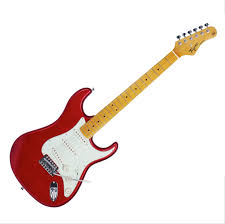
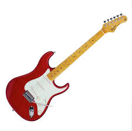

Guitarra Electrica
La guitarra eléctrica es un instrumento musical de seis cuerdas normalmente, que utiliza el principio de inducción electromagnética para convertir las vibraciones de sus cuerdas de metal en señales eléctricas
La guitarra eléctrica es un instrumento musical de seis cuerdas normalmente, que utiliza el principio de inducción electromagnética para convertir las vibraciones de sus cuerdas de metal en señales eléctricas
